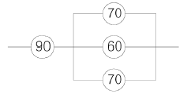
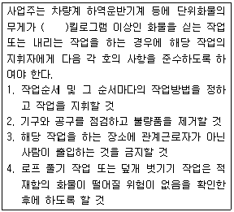
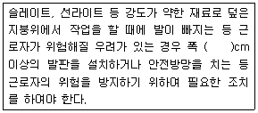
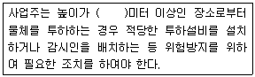

건설안전산업기사 (2011-10-02 기출문제)
1과목: 산업안전관리론
1. 다음 중 산업안전보건법상 자율안전확인대상 안전모의 시험성능기준 항목에 해당하지 않는 것은?
- 내관통성
- 내수성
- 충격흡수성
- 턱끈풀림
(정답률: 51%)

2. 다음 중 기차역의 정지된 열차 내에서 이동하는 다른 기차를 보았을 때 실제로 움직이지 않아도 움직이는 것처럼 느껴지는 심리적 현상을 무엇이라 하는가?
- 가상운동
- 유도운동
- 자동운동
- 지각운동
(정답률: 70%)
3. 다음 중 재해손실비의 산정방법에 있어 시몬즈 방식에 의한 계산방법으로 옳은 것은?
- 직접비 + 간접비
- 공동비용 + 개별비용
- 보험코스트 + 비보험코스트
- (휴업상해건수 × 관련비용평균치) + (통원상해건수× 관련비용평균치)
(정답률: 71%)
4. 다음 중 학습의 전이에 영향을 주는 조건과 가장 거리가 먼 것은?
- 학습자의 지능요인
- 학습정도의 요인
- 학습자의 태도요인
- 학습장소의 요인
(정답률: 59%)
5. 다음 중 리더십에 대한 설명으로 틀린 것은?
- 조직원에 의하여 선출된다.
- 지휘의 형태는 민주주의적이다.
- 조직원과의 사회적 간격이 넓다.
- 권한의 근거는 개인의 능력에 의한다.
(정답률: 67%)
6. 무재해운동의 추진기법 중 위험예지훈련의 4라운드에서 제3단계 진행방법에 해당하는 것은?
- 목표설정
- 현상파악
- 본질추구
- 대책수립
(정답률: 69%)
7. 다음 중 사회행동의 기본형태와 가장 거리가 먼 것은?
- 협력
- 투사
- 대립
- 도피
(정답률: 51%)
8. 다음 중 산업안전보건법상 안전관리자의 업무에 해당되지 않는 것은? (단, 그 밖에 안전에 관한 사항으로서 고용노동부장관이 정하는 사항은 제외한다.)
- 산업안전보건위원회 또는 안전ㆍ보건에 관한 노사협의체에서 심의ㆍ의결한 업무
- 작업장 내에서 사용되는 전체 환기장치 및 국소배기장치 등에 관한 설비의 점검
- 안전인증대상 기계ㆍ기구등과 자율안전확인대상 기계ㆍ기구 등 구입 시 적격품의 선정에 관한 보좌 및 조언ㆍ지도
- 해당 사업장의 안전보건관리규정 및 취업규칙에서 정한 업무
(정답률: 51%)
9. 다음 중 O.J.T(On the Job Training)에 관한 설명으로 적절하지 않은 것은?
- 개개인에게 적합한 지도 훈련이 가능하다.
- 직장의 실정에 맞는 실제적인 훈련을 실시할 수 있다.
- 교육을 통한 훈련효과에 상호 신뢰 이해도가 높다.
- 다수의 근로자들에게 조직적 훈련을 행하는 것이 가능하다.
(정답률: 68%)
10. 다음 중 산업안전보건법에 따른 무재해 운동의 추진에 있어 무재해 인증심사시 해당 사업장에서 며칠 이상의 휴업이 필요한 부상을 당해서 산업재해가 발생된 사실을 확인한 경우 관련 기관장은 이를 즉시 관할 지방노동관서의 장에게 통보하여야 하는가?
- 1일
- 3일
- 7일
- 10일
(정답률: 54%)
11. 다음 중 산업안전보건법상 중대재해에 해당하지 않은 것은?
- 추락으로 인하여 1명이 사망한 재해
- 건물의 붕괴로 인하여 15명의 부상자가 동시에 발생한 재해
- 화재로 인하여 4개월의 요양이 필요한 부상자가 3명 발생한 재해
- 근로환경으로 인하여 직업성 질병자가 5명 발생한 재해
(정답률: 71%)
12. 다음 중 산업안전보건법에 따라 건설용 리프트, 곤돌라를 이용한 작업을 하는 때에 근로자들에게 실시하여야 할 사업 내 안전보건교육의 종류는?
- 일일안전보건교육
- 특별안전보건교육
- 검사원안전보건교육
- 일반안전보건교육
(정답률: 69%)
13. 산업안전보건법상 프레스 작업시 작업시작 전 점검사항에 해당하지 않는 것은?
- 클러치 및 브레이크의 기능
- 매니퓰레이터 작동의 이상 유무
- 프레스의 금형 및 고정볼트 상태
- 1행정 1정지기구 급정지장치 및 비상정지장치의 기능
(정답률: 64%)
14. 다음 중 리스크 테이킹(risk taking)의 빈도가 가장 높은 사람은?
- 안전지식이 부족한 사람
- 안전기능이 미숙한 사람
- 안전태도가 불량한 사람
- 신체적 결함이 있는 사람
(정답률: 70%)
15. 다음 중 산업안전보건법상 안전보건표지에 있어 안내표지의 종류에 해당하지 않는 것은?
- 들것
- 세안장치
- 비상용기구
- 안전모착용
(정답률: 60%)
16. 다음 중 국제노동기구(ILO)의 기준에 따라 사망 및 영구전노동불능 재해일 때에는 근로손실일수를 며칠로 산정하는가?
- 10000일
- 7500일
- 6500일
- 5500일
(정답률: 66%)
17. 다음 중 적응기제(Adjustment Mechanism)의 유형에서 "동일화(Identification)"의 사례에 해당하는 것은?
- 운동시합에 진 선수가 컨디션이 좋지 않았다고 한다.
- 결혼에 실패한 사람이 고아들에게 정열을 쏟고 있다.
- 아버지의 성공을 자랑하며 자신의 목에 힘이 들어가 있다.
- 동생이 태어난 후 초등학교에 입학한 큰 아이가 손가락을 빨기 시작했다.
(정답률: 76%)
18. 일반적으로 재해원인을 직접원인과 간접원인으로 나눌때 다음 중 직접원인에 해당하는 것은?
- 기술적 원인
- 관리적 원인
- 교육적 원인
- 물적 원인
(정답률: 71%)
19. 다음 중 허츠버그(Herzberg)의 위생동기이론에 있어 동기요인에 해당하는 것은?
- 임금
- 지위
- 도전
- 작업조건
(정답률: 49%)
20. 다음 중 안전태도 교육의 과정에 있어 첫 번째 단계에 행하는 것으로 가장 적절한 것은?
- 요구되는 목표를 권장한다.
- 목표달성시 보상을 설명한다.
- 우수한 모법사례를 제시한다.
- 부하의 생각과 의견을 청취한다.
(정답률: 51%)
2과목: 인간공학 및 시스템안전공학
21. 다음 중 시스템 안전프로그램계획(SSPP)에서 완성해야 할 시스템안전업무에 속하지 않는 것은?
- 정성 해석
- 프로그램 심사의 참가
- 운용 해석
- 위험성 수준의 종류
(정답률: 34%)
22. 다음 중 작업기억과 관련된 설명으로 틀린 것은?
- 단기기억이라고도 한다.
- 오랜 기간 정보를 기억하는 것이다.
- 리허설은 정보를 작업기억 내에 유지하는 유일한 방법이다.
- 작업기억 내의 정보는 시간이 흐름에 따라 쇠퇴할 수 있다.
(정답률: 71%)
23. 다음 중 얼음과 드라이아이스 등을 취급하는 작업에 대한 대책으로 적절하지 않은 것은?
- 더운 물과 더운 음식을 섭취한다.
- 혈액순환을 위해 틈틈이 운동을 한다.
- 가능한 한 식염(食鹽)을 많이 섭취한다.
- 오랫동안 한 장소에 고정하여 작업하지 않는다.
(정답률: 60%)
24. 다음 중 고장 손실에 따른 피해가 큰 중점 설비가 대상일 때 가장 적합한 보전방식은?
- 예방보전
- 일상보전
- 계량보전
- 사후보전
(정답률: 58%)
25. 다음 중 FTA 기법의 절차로 옳은 것은?
- 시스템의 정의 → FT작성 → 정성적평가 → 정량적평가
- 시스템의 정의 → FT작성 → 정량적평가 → 정성적평가
- 시스템의 정의 → 정성적평가 → FT작성 → 정량적평가
- 시스템의 정의 → 정량적평가 → FT작성 → 정성적평가
(정답률: 54%)
26. 신체 반응의 척도 중 생리적 스트레인의 척도로 신체적 변화의 측정 대상에 해당하지 않는 것은?
- 혈압
- 부정맥
- 혈액성분
- 심박수
(정답률: 64%)
27. 다음 중 복잡한 시스템을 분업에 의하여 여럿이 분담하여 설계한 서브시스템 간의 인터페이스를 조종하여 각 서브시스템 및 전 시스템의 안전성에 악영향을 미치지 않게 하기 위한 분석기법은?
- 운용위험분석
- 예비위험분석
- 결함위험분석
- 결함수분석
(정답률: 24%)
28. FT도에서 사용하는 기호나 게이트 중 입력현상이 발생하여 어떤 일정시간이 지속된 후 출력이 발생하는 것은?
- 조합AND게이트
- 위험 지속 기호
- 시간 단축 기호
- 억제 게이트
(정답률: 59%)
29. 다음 중 MIL-STD-882B에서 시스템 안전 필요사항을 충족시키고 확인된 위험을 해결하기 위한 우선권을 정하는 순서로 옳은 것은?
- 최소리스크를 위한설계 → 안전장치설치 → 경보장치설치 → 절차 및 교육훈련 개발
- 최소리스크를 위한설계 → 경보장치설치 → 안전장치설치 → 절차 및 교육훈련 개발
- 절차 및 교육훈련 개발 → 최소리스크를 위한설계 → 경보장치설치 → 안전장치설치
- 절차 및 교육훈련 개발 → 최소리스크를 위한설계 → 안전장치설치 → 경보장치설치
(정답률: 41%)
30. 다음 중 경계 및 경보신호를 설계할 때 적합하지 않는 것은?
- 배경 소음의 진동수와 같은 신호를 사용한다.
- 주의를 끌기 위해서는 변조된 신호를 사용한다.
- 장애물이 있는 경우에는 500Hz 이하의 진동수를 갖는 신호를 사용한다.
- 경보효과를 높이기 위해서 개시시간이 짧은 고감도 신호를 사용한다.
(정답률: 57%)
31. 다음 중 입식작업대의 높이를 결정하는 요소와 가장 거리가 먼 것은?
- 작업의 정밀도
- 인체측정자료
- 무게중심의 결정
- 파악한계
(정답률: 40%)
32. 다음 중 광원으로부터의 직사휘광에 대한 처리방법으로 적절하지 않은 것은?
- 가리개 및 차양을 사용한다.
- 광원의 휘도를 줄이고 수를 늘린다.
- 광원을 시선에서 멀리 위치시킨다.
- 휘광원의 주위를 밝게 하여 광도비를 높인다.
(정답률: 53%)
33. 다음 중 공간이나 제품의 설계시 움직이는 몸의 자세를 고려하기 위해 사용되는 인체치수를 무엇이라 하는가?
- 비례적 인체치수
- 구조적 인체치수
- 기능적 인체치수
- 해부적 인체치수
(정답률: 58%)
34. 다음과 같은 시스템의 전체 신뢰도는 약 얼마인가? (단, 원 안의 수치는 각 부품의 신뢰도이다.)

- 26%
- 64%
- 87%
- 99%
(정답률: 50%)
35. 일반적인 인간-기계 시스템의 형태 중 인간이 사용자나 동력원으로 기능하는 것은?
- 기계화체계
- 수동체계
- 자동체계
- 반자동체계
(정답률: 62%)
36. 다음 중 텍스트 정보를 표현하는 방법의 설명으로 옳은 것은?
- 영문 대문자는 소문자보다 읽기 쉽다.
- 자간이 좁을 때보다 보통일 때 더 많은 단어를 읽을 수 있다.
- 행간이 좁을수록 더 읽기 쉽다.
- 문장은 수동문이나 부정문보다 능동문이나 긍정문이 더 이해하기 쉽다.
(정답률: 48%)
37. 60fL의 광도를 요하는 시각 표시장치의 반사율이 75%일 때 소요조명은 몇 fc인가?
- 75
- 80
- 85
- 90
(정답률: 45%)
38. 동전 1개를 3번 던질 때 뒷면이 2개만 나오는 경우를 자극정보라 한다면 이때 얻을 수 있는 정보량은 약 몇 bit인가?
- 1.13
- 1.33
- 1.53
- 1.73
(정답률: 27%)
39. 다음 중 인간-기계시스템 설계의 주요 단계를 6단계로 구분하였을 때 3단계인 기본설계에 해당하지 않은 것은?
- 보조물 설계 결정
- 인간 성능 요건 명세 결정
- 기능의 할당
- 직무분석
(정답률: 39%)
40. 다음 중 불연속 통제장치에 해당하는 것은?
- 노브
- 페달
- 크랭크
- 토글스위치
(정답률: 51%)
3과목: 건설시공학
41. 다음 중 철골세우기용 기계설비가 아닌 것은?
- 가이데릭
- 스티프레그데릭
- 진폴
- 드래그라인
(정답률: 75%)
42. 철근콘크리트공사에서 일반적으로 거푸집 존치기간이 가장 긴 부분은?
- 보옆
- 기둥
- 외벽
- 바닥판밑
(정답률: 79%)
43. 점토질 지반에서 지반개량의 목적과 거리가 먼 것은?
- 연약지반 강화
- 예민비 개선
- 부등침하 방지
- 지반의 지지력 증대
(정답률: 76%)
44. 다음 중 방사선차폐와 가장 관계 깊은 콘크리트는?
- 경량 콘크리트
- 중량 콘크리트
- 수밀 콘크리트
- 팽창 콘크리트
(정답률: 45%)
45. 흙막이 공사 중 어스앵커공법에 관한 설명 중 옳지 않은 것은?
- 작업공간에 대형기계의 반입이 용이하다.
- 공기단축과 동시에 안전관리도 용이하다.
- 지반조건 변화에 대해 설계변경이 어렵다.
- 시가지 공사시 매설물에 주의해야 한다.
(정답률: 55%)
46. 점토지반에 모래를 깔고 그 위에 성토에 의해 하중을 가하면 장기간에 걸쳐 점토 중의 물이 샌드파일을 통하여 지상에 배수되어 지반을 압밀 강화시키는 공법은?
- 샌드드레인 공법
- 바이브로플로테이션 공법
- 웰포인트 공법
- 그라우팅공법
(정답률: 78%)
47. 철근콘크리트구조에서 철근이음 시 유의사항으로 옳지 않은 것은?
- 동일한 곳에 철근 수의 반 이상을 이어야 한다.
- 이음의 위치는 응력이 큰 곳을 피하고 엇갈리게 잇는다.
- 주근의 이음은 인장력이 가장 작은 곳에 두어야 한다.
- 지름이 다른 주근을 잇는 경우에는 작은 주근의 지름을 기준으로 한다.
(정답률: 69%)
48. 철골공사에서 홈을 파기 위한 목적으로 한 화구로서 산소아세틸렌 불꽃을 이용하여 녹여 깎은 재의 뒷부분을 깨끗이 깎는 것을 무엇이라 하는가?
- 가스가우징
- 크레이터
- 플럭스
- 위빙
(정답률: 79%)
49. PHC말뚝에 대한 설명 중 틀린 것은?
- 압축강도가 80MPa 이상이다.
- 재령 1~2일에 사용가능하다.
- 선단부의 구조는 중굴공법에서는 폐쇠형을 사용한다.
- 양생은 고온고압 증기양생을 이용한다.
(정답률: 40%)
50. 서중 콘크리트 공사에 대한 설명으로 옳은 것은?
- 서중콘크리트란 일 평균 기온 20도를 초과하는 시기에 시공되는 콘크리트를 말한다.
- 서중콘크리트는 초기강도 발현이 빠르기 때문에 장기 강도가 높다.
- 부어넣을 때의 콘크리트 온도는 40도 이하로 한다.
- 혼화제는 AE감수제 지연형 또는 감수제 지연형을 사용한다.
(정답률: 54%)
51. 흙막이 공사 후 지표면의 재하 하중에 못 견디어 흙막이 벽이 붕괴되어 바깥에 있는 흙이 안으로 밀려 흙파기 저면이 불룩하게 솟아오르는 현상은?
- 히빙현상
- 보일링 현상
- 수동토압 파괴현상
- 전단 파괴현상
(정답률: 75%)
52. 다음 중 용접 착수전 검사항목에 속하지 않는 것은?
- 트임새 모양
- 모아대기법
- 운봉
- 구속법
(정답률: 71%)
53. 다음 중 콘크리트의 건조수축을 크게 하는 요인에 해당되지 않는 것은?
- 분말도가 큰 시멘트 사용
- 부재의 단면치수가 클 때
- 흡수량이 많은 골재를 사용할 때
- 온도가 높을 경우, 습도가 낮을 경우
(정답률: 54%)
54. 철근콘크리트공사에서 컨시스턴시(consistency)의 정의로 옳은 것은?
- 반죽질기 여하에 따르는 작업의 난이도 정도 및 재료 분리에 저항하는 정도를 나타내는 굳지 않은 콘크리트의 성질
- 주로 수량의 다소에 따르는 반죽의 되고 진 정도를 나타내는 굳지 않은 콘크리트의 성질
- 거푸집에 쉽게 다져 넣을 수 있고, 거푸집을 제거하면 천천히 변하는 굳지 않은 콘크리트의 성질
- 굵은 골재의 최대치수 등에 따르는 마무리하기 쉬운 정도를 나타내는 굳지 않은 콘크리트의 성질
(정답률: 48%)
55. 기존건물에 근접하여 구조물을 구축할 때 기존건물의 균열 및 파괴를 방지할 목적으로 지하에 실시하는 보강공법은?
- BH(Boring Hole)공법
- 베노토(Benoto)공법
- 언더피닝(Under pinnig)공법
- 심초공법
(정답률: 79%)
56. 기초를 얕은 기초와 깊은 기초로 나눌 때 얕은 기초의 종류가 아닌 것은?
- 온통기초
- 캔틸래버 기초
- 말뚝 기초
- 복합 기초
(정답률: 52%)
57. 지하구조물의 시공순서를 지상에서부터 시작하여 점차 깊은 지하로 진행하여 가면서 완성하는 공법은?
- 진관식 기초말뚝 공법
- 심초 공법
- 탑다운 공법
- 웰포인트 공법
(정답률: 59%)
58. 거푸집 제거작업의 주의사항 중 옳지 않은 것은?
- 진동, 충격을 주지 않고 콘크리트가 손상되지 않도록 순서에 맞게 제거한다.
- 지주를 바꾸어 세울 동안에는 상부의 작업을 제한하여 집중하중을 받는 부분의 지주는 그대로 둔다.
- 제거한 거푸집은 재사용할 수 있도록 적당한 장소에 정리하여 둔다.
- 구조물의 손상을 고려하여 제거시 찢어져 남은 거푸집 쪽널은 그대로 두고 미장공사를 한다.
(정답률: 79%)
59. 말뚝의 종류에 있어서 재료상의 분류가 아닌 것은?
- 철제말뚝
- 기성콘크리트말뚝
- 지지말뚝
- 제자리 콘크리트 말뚝
(정답률: 49%)
60. 제자리 콘크리트 말뚝을 시공할 때 목표지점까지 케이싱튜브로 공벽을 보호하면서 굴착하는 공법은?
- 심초말뚝공법
- 베노토(benoto)말뚝공법
- 어스드릴(earth drill)공법
- 리버스 서큘레이션(reverse circulation)말뚝공법
(정답률: 40%)
4과목: 건설재료학
61. 콘크리트용 골재의 품질조건으로 옳지 않은 것은?
- 견경한 것
- 구형에 가까운 것
- 청정한 것
- 표면이 매끈한 것
(정답률: 64%)
62. 실링재와 같은 뜻의 용어로 부재의 접합부에 충전하여 접합부를 기밀수밀하게 하는 재료는?
- 바니시
- 가스켓
- AE감수제
- 코킹재
(정답률: 64%)
63. 콘크리트에 사용되는 AE감수제의 효과와 가장 거리가 먼 것은?
- 단위수량 감소
- 단위시멘트량 감소
- 시공연도 개선
- 단열성 향상
(정답률: 51%)
64. 천연 슬레이트로 만들어 지붕, 벽 재료로 쓸 수 있는 암석의 종류는?
- 안산암
- 현무암
- 사암
- 점판암
(정답률: 68%)
65. 시멘트 제조시 클링커(clinker)에 석고를 첨가하는 주된 이유는?
- 조기강도의 증진
- 응결속도의 조절
- 시멘트 색의 조절
- 내약품성의 증대
(정답률: 54%)
66. 건축재료의 화학적 조성에 의한 분류에서 유기재료에 속하지 않는 것은?
- 목재
- 아스팔트
- 플라스틱
- 시멘트
(정답률: 47%)
67. 열선흡수유리의 특징에 대한 설명 중 옳지 않은 것은?
- 여름철 냉방부하를 감소시킨다.
- 자외선에 의한 상품 등의 변색을 방지한다.
- 단열효과가 크고 결로방지용으로 우수하다.
- 채광을 요구하는 진열장에 이용된다.
(정답률: 44%)
68. 골재의 조립률에 관한 설명 중 옳지 않은 것은?
- 모래보다 자갈의 조립률이 크다.
- 자갈의 조립률이 2.6~3.1이면 입도가 좋은 편이다.
- 같은 골재라도 입경이 크면 조립률은 커진다.
- 조립률을 구하기 위해서 체가름 시험방법을 활용한다.
(정답률: 70%)
69. 다음 중 시멘트의 안정성 시험은?
- 슬럼프 테스트
- 브레인법
- 길모아시험
- 오토클레이브 팽창도 시험
(정답률: 64%)
70. 건축물의 내외장면의 마감, 각종 인조석, 현장타설 착색 콘크리트로 사용하는 시멘트는?
- 고로시멘트
- 실리카시멘트
- 중용열포틀랜드시멘트
- 백색포틀랜드시멘트
(정답률: 65%)
71. 알루미나 시멘트의 특징에 관한 설명 중 옳지 않은 것은?
- 조기강도가 크다.
- 바닷물에 대한 화학적 저항성이 크다.
- 내화콘크리트의 시멘트로서 적합하다.
- 콘크리트 내 철근의 부식방지효과가 뛰어나다.
(정답률: 40%)
72. 콘크리트 배합비 또는 물시멘트비 등을 결정할 때 보통 사용되는 골재 상태는?
- 절대건조 상태
- 기건 상태
- 습윤 상태
- 표면건조 내부포수 상태
(정답률: 58%)
73. 스테인리스강은 어떤 성분의 금속이 많이 포함되어 있는 금속재료인가?
- 망간
- 규소
- 크롬
- 인
(정답률: 66%)
74. 콘크리트 표면 등에 어떤 구조물 등을 달아 매기 위하여 콘크리트를 부어넣기 전에 미리 묻어 넣은 고정철물로 주철제 또는 철판 가공품의 명칭은?
- 인서트
- 코너비드
- 드라이브핀
- 조이너
(정답률: 65%)
75. 시멘트의 분말도가 클수록 나타나는 특징에 해당하지않는 것은?
- 수화작용이 촉진된다.
- 초기강도가 증대된다.
- 풍화작용이 억제된다.
- 초기에 균열이 많이 발생한다.
(정답률: 62%)
76. 유리섬유로 보강하여 항공기, 차량 등의 구조재 뿐아니라 욕조. 창호재 등으로 이용되는 합성수지는?
- 요소수지
- 아크릴수지
- 폴리에스테르수지
- 폴리에틸렌수지
(정답률: 47%)
77. 목재를 수중에 완전 침수시키는 목적으로 옳은 것은?
- 가공하기 쉽게 하기 위하여
- 강도를 강하게 하기 위하여
- 부패되지 않게 하기 위하여
- 열전도율을 작게 하기 위하여
(정답률: 66%)
78. 다음 중 콘크리트의 혼화 재료에 속하지 않는 것은?
- 염화칼슘
- AE제
- 타르
- 포졸란
(정답률: 57%)
79. 아스팔트는 온도에 의한 반죽질기가 현저하게 변화하는 데, 이러한 변화가 일어나기 쉬운 정도를 무엇이라 하는가?
- 감온성
- 침입도
- 신도
- 연화성
(정답률: 68%)
80. 드라이비트용 도료에 대한 설명으로 옳지 않은 것은?
- 수용성 아크릴 수지와 천연골재가 주원료이다.
- 도료 경화 후 무광택 래커나 폴리우레탄 래커 등으로 마감코팅 한다.
- 단열성이 우수하고, 부착성이 좋다.
- 내수성, 내약품성, 내구성이 우수하다.
(정답률: 41%)
5과목: 건설안전기술
81. 거푸집 동바리 등을 조립하는 경우 조립도에 명시하여야 할 사항은?
- 개구부 위치
- 덧댐목의 위치
- 작업하중
- 동바리⋅멍에 등 부재의 재질 및 단면규격
(정답률: 41%)
82. 토공사용 기계의 용도에 관한 설명 중 옳지 않은 것은?
- 파워쇼벨은 지반면보다 높은 곳의 굴착에 적합하다.
- 드래그쇼벨은 지반면보다 낮은 곳의 굴착에 적합하다.
- 드래그라인은 지반면보다 낮은 경질지반의 굴착에 적당하다.
- 크램셀은 우물통과 같은 협소한 장소의 흙을 퍼올리는데 적합하다.
(정답률: 46%)
83. 굴착작업을 하는 경우 지반의 붕괴 또는 토석의 낙하에 의한 근로자의 위험을 방지하기 위하여 관리감독자로 하여금 작업시작 전에 점검하도록 해야 하는 사항과 가장 거리가 먼 것은?
- 부석⋅균열의 유무
- 함수⋅용수
- 동결상태의 변화
- 시계의 상태
(정답률: 67%)
84. 다음 중 터널 지보공을 설치한 경우에 수시로 점검하여야 할 사항에 해당하지 않는 것은?
- 기둥침하의 유무 및 상태
- 부재의 긴압 정도
- 매설물 등의 유무 또는 상태
- 부재의 접속부 및 교차부의 상태
(정답률: 57%)
85. 다음 ( )에 알맞은 것은?

- 80
- 100
- 150
- 200
(정답률: 63%)
86. 건설용 리프트에 대하여 바람에 의한 붕괴를 방지하는 조치를 한다고 할 때 그 기준이 되는 최소 풍속은?
- 순간 풍속 30m/s 초과
- 순간 풍속 35m/s 초과
- 순간 풍속 40m/s 초과
- 순간 풍속 45m/s 초과
(정답률: 56%)
87. 산업안전보건관리비 중 추락방지용 안전시설비의 항목에서 사용할 수 있는 내역이 아닌 것은?
- 안전난간
- 작업발판
- 개구부 덮개
- 안전대 걸이설비
(정답률: 41%)
88. 다음 ( )안에 알맞은 것은?

- 20
- 25
- 30
- 40
(정답률: 69%)
89. 다음 중 토류벽에 거치된 어스 앵커의 인장력을 측정하기 위한 계측기는?
- 하중계
- 변형계
- 지하수위계
- 지중경사계
(정답률: 53%)
90. 콘크리트를 타설할 때 거푸집에 작용하는 콘크리트 측압에 영향을 미치는 요인과 가장 거리가 먼 것은?
- 콘크리트 타설 속도
- 콘크리트 타설 높이
- 콘크리트의 강도
- 콘크리트 단위용적중량
(정답률: 64%)
91. 보일링 현상을 방지하기 위한 대책으로 가장 거리가 먼 것은?
- 굴착배면의 지하수위를 낮춘다.
- 토류벽의 근입 깊이를 깊게 한다.
- 토류벽 상단부에 버팀대를 보강한다.
- 토류벽 선단에 코어 및 필터를 설치한다.
(정답률: 35%)
92. 흙의 연경도에서 반고체 상태와 소성상태의 한계를 무엇이라 하는가?
- 액성한계
- 소성한계
- 수축한계
- 반수축한계
(정답률: 63%)
93. 말비계를 조립하여 사용할 때의 준수사항으로 옳지 않은 것은?
- 지주부재의 하단에는 미끄럼 방지장치를 할 것
- 말비계의 높이가 2m를 초과하는 경우에는 작업발판의 폭을 30cm 이상으로 할 것
- 지주부재와 수평면의 기울기를 75° 이하로 할 것
- 지주부재와 지주부재 사이를 고정시키는 보조부재를 설치할 것
(정답률: 54%)
94. 안전난간 설치 시 발끝막이판은 바닥면으로부터 최소얼마 이상의 높이를 유지해야 하는가?
- 5cm 이상
- 10cm 이상
- 15cm 이상
- 20cm 이상
(정답률: 57%)
95. 거푸집 작업에서 연결재를 선정할 때 고려해야 할 사항이 아닌 것은?
- 조합 부품 수가 적은 것
- 회수⋅해체하기 쉬운 것
- 충분한 강도가 있는 것
- 박리제를 칠한 것
(정답률: 50%)
96. 철근가공작업에서 가스절단을 할 때의 유의 및 확인사항으로 옳지 않은 것은?
- 가스절단 작업 시 호스는 겹치거나 구부러지거나 밟히지 않도록 한다.
- 호스, 전선 등은 작업효율을 위하여 다른 작업장을 거치는 곡선상의 배선이어야 한다.
- 작업장에서 가연성 물질에 인접하여 용접작업할 때에는 소화기를 비치하여야 한다.
- 가스절단 작업 중에는 보호구를 착용하여야 한다.
(정답률: 73%)
97. 다음 ( )안에 들어갈 숫자는?

- 2
- 3
- 4
- 5
(정답률: 50%)
98. 굴착공사에서 굴착 높이가 5m, 굴착 기초면의 폭이 5m인 경우 양단면 굴착을 할 때 굴착부 상단면의 폭은? (단, 굴착면의 기울기는 1:1로 한다.)
- 10m
- 15m
- 20m
- 25m
(정답률: 56%)
99. 옥내사업장에는 비상시에 근로자에게 신속하게 알리기 위한 경보용 설비 또는 기구를 설치하여야 하는데 그 설치기준으로 옳은 것은?
- 연면적이 400m2 이거나 상시 40명 이상의 근로자가 작업하는 옥내 작업장
- 연면적이 400m2 이거나 상시 50명 이상의 근로자가 작업하는 옥내 작업장
- 연면적이 500m2 이거나 상시 40명 이상의 근로자가 작업하는 옥내 작업장
- 연면적이 500m2 이거나 상시 50명 이상의 근로자가 작업하는 옥내 작업장
(정답률: 45%)
100. 강관비계에서 비계기둥간의 적재하중은 몇 kg을 초과하지 않아야 하는가?
- 200kg
- 300kg
- 400kg
- 500kg
(정답률: 61%)
설명: 자율안전확인대상 안전모의 시험성능기준 항목은 내관통성, 충격흡수성, 턱끈풀림이 포함되어 있습니다. 내수성은 안전모의 성능과는 관련이 없는 항목입니다. 내수성은 제품이 물에 닿았을 때 내구성을 유지하는 능력을 말합니다.